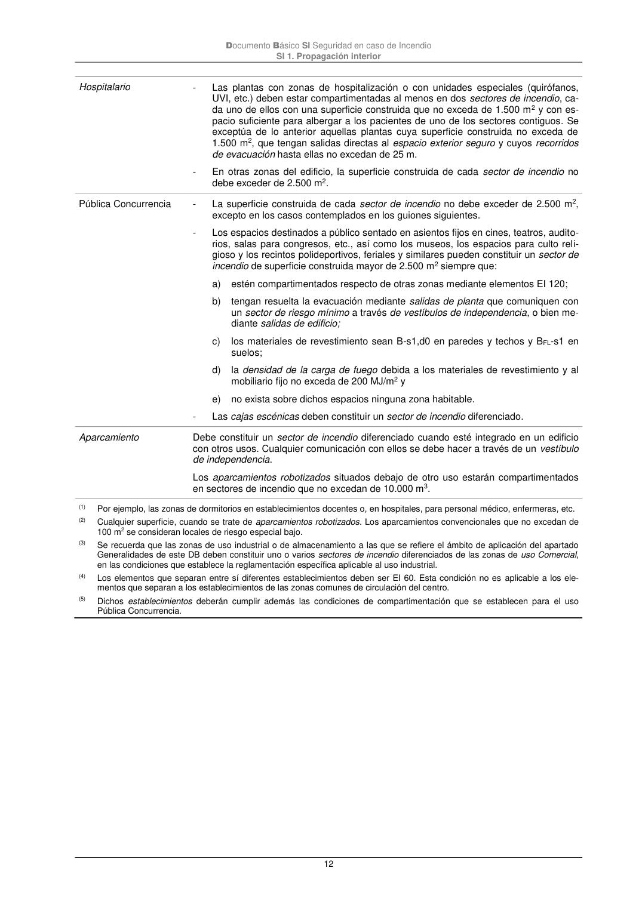

DB-SI Seguridad en caso de incendio · edición 2025-03-04 · capa oficial
Documento DB-SI-oficial · SHA-256 del PDF 0a2e78cd62471d9cc5cfe2efbc6aa39fdbad73c124aea7b039f9de96c141e105
Página física 12 de 92.
Copia fiel del PDF fuente · Fuente oficial
Ficha de la disposición en la fuente oficial
Formato: Texto de la página (Markdown)
Documento Básico SI Seguridad en caso de Incendio SI 1. Propagación interior 12 Hospitalario - Las plantas con zonas de hospitalización o con unidades especiales (quirófanos, UVI, etc.) deben estar compartimentadas al menos en dos sectores de incendio, ca- da uno de ellos con una superficie construida que no exceda de 1.500 m2 y con es- pacio suficiente para albergar a los pacientes de uno de los sectores contiguos. Se exceptúa de lo anterior aquellas plantas cuya superficie construida no exceda de 1.500 m2, que tengan salidas directas al espacio exterior seguro y cuyos recorridos de evacuación hasta ellas no excedan de 25 m. - En otras zonas del edificio, la superficie construida de cada sector de incendio no debe exceder de 2.500 m2. Pública Concurrencia - La superficie construida de cada sector de incendio no debe exceder de 2.500 m2, excepto en los casos contemplados en los guiones siguientes. - Los espacios destinados a público sentado en asientos fijos en cines, teatros, audito- rios, salas para congresos, etc., así como los museos, los espacios para culto reli- gioso y los recintos polideportivos, feriales y similares pueden constituir un sector de incendio de superficie construida mayor de 2.500 m2 siempre que: a) estén compartimentados respecto de otras zonas mediante elementos EI 120; b) tengan resuelta la evacuación mediante salidas de planta que comuniquen con un sector de riesgo mínimo a través de vestíbulos de independencia, o bien me- diante salidas de edificio; c) los materiales de revestimiento sean B-s1,d0 en paredes y techos y BFL-s1 en suelos; d) la densidad de la carga de fuego debida a los materiales de revestimiento y al mobiliario fijo no exceda de 200 MJ/m2 y e) no exista sobre dichos espacios ninguna zona habitable. - Las cajas escénicas deben constituir un sector de incendio diferenciado. Aparcamiento Debe constituir un sector de incendio diferenciado cuando esté integrado en un edificio con otros usos. Cualquier comunicación con ellos se debe hacer a través de un vestíbulo de independencia. Los aparcamientos robotizados situados debajo de otro uso estarán compartimentados en sectores de incendio que no excedan de 10.000 m3. (1) Por ejemplo, las zonas de dormitorios en establecimientos docentes o, en hospitales, para personal médico, enfermeras, etc. (2) Cualquier superficie, cuando se trate de aparcamientos robotizados. Los aparcamientos convencionales que no excedan de 100 m2 se consideran locales de riesgo especial bajo. (3) Se recuerda que las zonas de uso industrial o de almacenamiento a las que se refiere el ámbito de aplicación del apartado Generalidades de este DB deben constituir uno o varios sectores de incendio diferenciados de las zonas de uso Comercial, en las condiciones que establece la reglamentación específica aplicable al uso industrial. (4) Los elementos que separan entre sí diferentes establecimientos deben ser EI 60. Esta condición no es aplicable a los ele- mentos que separan a los establecimientos de las zonas comunes de circulación del centro. (5) Dichos establecimientos deberán cumplir además las condiciones de compartimentación que se establecen para el uso Pública Concurrencia.
